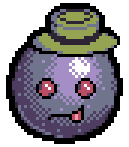
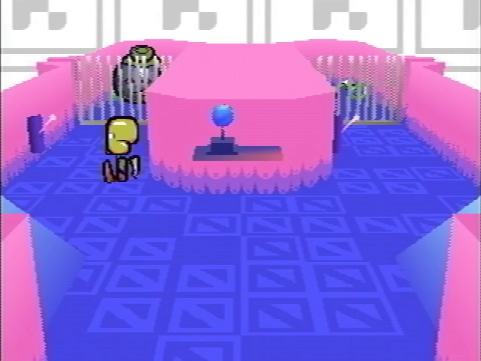
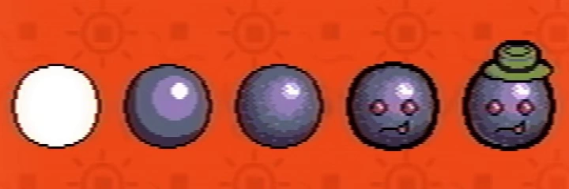

Fanmade recreated sprite
Amber is one of the pets that can be caught in Even Care. She is the first pet Paul catches in Petscop 1.
Amber is shaped like a large ball. She is a stony blue color and has red eyes, as well as what could be an orange colored tongue or tooth protruding from her mouth. She wears a dull green boater hat.
Amber is a young ball.
She’s afraid to leave home. If her home is good, this is not a problem.
She is very heavy, and that makes her life a little harder, as well as yours.
What’s the safest place you can put her in? You should start thinking about that.

Amber's cage

Amber history
Amber is found in a room containing two closed cells separated by a wall that can be opened by interacting with their respective switches. Originally in the cell to the left, opening the door to said cell causes Amber to hop over to the cell to the right so as to avoid the player; opening the cell to the right causes Amber to move back to the left cell, and pursuing her in this open cell only causes her to move back to the right cell, and vice versa.
In order to catch her, the player must trigger an open, empty cell's switch and run into it as it is closing, trapping the player in the process. Amber will then join the player in this cell by hopping over from hers. The player can then escape from the enclosure through a concealed passage in the dividing wall and exiting through the open cell.
In development, shown in the Extra Stuff menu, Amber was only given her face and hat in her latest two designs.
There are multiple cases of adopted children with reactive attachment disorder being punished by being locked in cages: an example is the case of the parents Michael and Sharen Gravelle, who adopted children and were sentenced to jail for, among other things, keeping children in cage-like enclosures. [1] The method in which Amber is caught might be a reference to this.
Amber's name may be a reference to the AMBER Alert, a national alert system used specifically for child abduction.
| People | Paul · Belle · Carrie · Marvin · Rainer · Anna · Mike · Lina · Jill · Daniel |
|---|---|
| Characters | Guardian · Amber · Pen · Randice · Roneth · Toneth · Wavey · Care · Tiara |
{kind=link}
{kind=link}
{kind=link}
{kind=link}
{kind=link}
{kind=link}